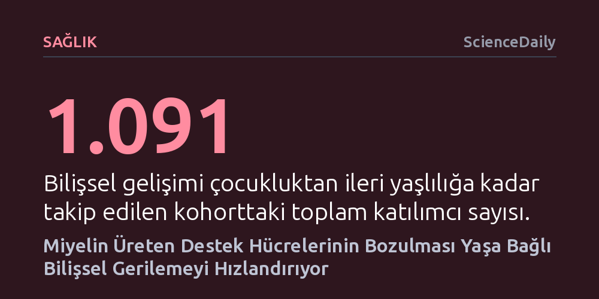

SAGLIK · ScienceDaily · 2026-10-18
Sinir liflerini korumakla görevli oligodendrosit hücrelerinin yaşlandıkça bozularak aşırı ve kusurlu miyelin üretmesi, bilişsel gerilemeyi doğrudan tetikliyor. Bu hücrelerde NRF2 proteininin azalmasıyla tetiklenen hasar, mevcut MS ilaçlarının yaşa bağlı bellek kaybını önlemede kullanılabileceğini gösteriyor.
Beyindeki koruyucu destek hücrelerinin yaşlandıkça bilişsel çöküşün doğrudan failine dönüşebildiğini göstererek, mevcut bazı nörolojik ilaçların yaşa bağlı hafıza kaybını önlemede kullanılabileceği yeni bir tedavi kapısı açıyor.

Beyin yaşlanması dendiğinde akla ilk gelen senaryo, genellikle nöronların teker teker ölmesi veya dokuda zehirli protein plaklarının birikmesidir. Ancak Edinburgh Üniversitesi ve Birleşik Krallık Demans Araştırma Enstitüsü'nden bilim insanlarının yürüttüğü yeni bir çalışma, dikkatleri şimdiye kadar hep "koruyucu" gözüyle bakılan bambaşka bir hücre grubuna çevirdi: oligodendrositlere. Sinir liflerinin etrafını yalıtkan bir örtüyle saran bu hücrelerin, yaşlandıkça beklenmedik şekilde yoldan çıkarak bellek ve düşünme yetilerindeki aşınmanın bizzat tetikleyicisi haline gelebildiği ortaya çıktı.
Oligodendrositler normal koşullarda sinir hücrelerinin elektriksel iletilerini hızlı ve kesintisiz aktarmasını sağlayan miyelin kılıfını üretmekle ve bakımını yapmakla yükümlüdür. Yıllardır nörobilim çevrelerinde yalnızca yararlı destek unsurları olarak kabul edilen bu hücrelerin, yaşlanma sürecinde işlev bozukluğuna uğradıklarında anormal ve kusurlu miktarda miyelin biriktirdiği saptandı. Aşırı üretilen bu kusurlu miyelin, sinir liflerini korumak yerine onları boğup iletişim ağlarını tahrip ediyor.
Araştırmacılar, bu durumu nörolojide köklü bir paradigma değişimi olarak nitelendiriyor. Ekip üyelerinden birinin ifadesiyle, "Bu hücreleri her zaman tamamen yararlı gördük, oysa burada yaşlanmayla birlikte işlevlerini yitirip bilişsel bozulmaya katkıda bulunabildiklerini şaşırtıcı şekilde tespit ettik." Dolayısıyla yaşa bağlı unutkanlık ve zihinsel yavaşlama, yalnızca sinir hücrelerinin tükenmesinden değil, onları korumakla görevli kalkanın yozlaşmasından da kaynaklanıyor.
Bu keşfin ardında, bilimin en uzun soluklu ve kapsamlı çalışmalarından biri olan 1936 Lothian Doğum Kohortu yer alıyor. İskoçya'da aynı yıl doğan bireylerin çocukluktan itibaren zihinsel yeteneklerini kaydeden araştırmacılar, katılımcıları 70 ile 82 yaşları arasında tekrar çok yönlü testlere tabi tuttu. Bilgi işleme hızı, mekânsal kavrayış ve bellek performansının ölçüldüğü bu aşamada, neredeyse tüm bireylerde bir miktar bilişsel gerileme görüldü; ancak bu gerilemenin temposu kişiden kişiye büyük farklılık gösterdi.
Kohorta kayıtlı 1.091 kişiden 866'sı 70 yaş sonrası ileri testleri tamamladı. Araştırma ekibi, vefatlarının ardından beyin dokularını bilime bağışlayan bir grup katılımcının sinir sistemini mikroskop altında inceleme fırsatı buldu. İncelemeler, zihinsel becerileri hızla gerileyen bireylerin beyinlerinde çok belirgin bir ortak tabloyu açığa çıkardı: Büyük sinir liflerinin sayısı ciddi oranda azalmıştı ve geriye kalan liflerin etrafında sağlıklı olmayan, anormal yapıda miyelin birikintileri mevcuttu.
Elde edilen verilerin en can alıcı noktası, bu dokusal anormalliklerin kişinin belirli bir yaştaki anlık zekâ ya da test skorundan ziyade, zihinsel yeteneklerinin ne kadar hızlı kötüleştiğiyle doğrudan örtüşmesiydi. Başka bir deyişle, kusurlu miyelin birikimi rastlantısal bir yaşlanma belirtisi değil, bilişsel çöküşün ivmesini belirleyen doğrudan bir faktördü.
Araştırmacılar, oligodendrositlerin neden koruyuculuktan yıkıcılığa evrildiğini anlamak için hücresel düzeydeki genetik mekanizmaları mercek altına aldı. Hızlı bilişsel kayıp yaşayan bireylerin oligodendrositlerinde, NRF2 adı verilen kritik bir proteinin belirgin düzeyde azaldığı tespit edildi. NRF2, hücreleri hasara ve dış etkenlere karşı savunan yüzlerce koruyucu geni yöneten bir orkestra şefi gibi görev yapıyordu.
Bu proteinin eksikliğinin doğrudan nedensel bir rol oynayıp oynamadığını sınamak amacıyla fare modelleri üzerinde deneyler kurgulandı. Bilim insanları farelerin oligodendrositlerindeki NRF2 seviyesini yapay olarak düşürdüklerinde, hayvanların beyninde insan dokularında görülen anomalilerin tıpatıp aynısı ortaya çıktı: Büyük sinir lifleri tahrip oldu, çevrelerinde aşırı ve kusurlu miyelin tabakaları yığıldı ve farelerin yaşlandıkça bilişsel görevlerde gösterdiği performans belirgin biçimde zayıfladı.
Bu deney dizisi, şüpheleri kesin bir nedensellik bağına dönüştürdü. NRF2 proteininin azalması oligodendrositleri savunmasız bırakıyor, kendi işlevini yürütemeyen bu destek hücreleri kontrolsüz ve anormal miyelin sentezleyerek korumak zorunda oldukları sinir hatlarına zarar vermeye başlıyordu.
Yaşlanan dünya nüfusunda demans ve bilişsel bozulma vakaları hızla artarken, süreci durduracak etkili bir tedavinin bulunmaması tıbbın en büyük çıkmazlarından biridir. Edinburgh Üniversitesi öncülüğündeki bu çalışmanın yarattığı en büyük heyecan ise, saptanan hücresel hasar mekanizmasının tıp dünyası için büsbütün yabancı bir hedef olmamasından kaynaklanıyor.
NRF2 yolağını aktive eden bileşikler, günümüzde Multipl Skleroz (MS) gibi nörolojik hastalıkların tedavisinde zaten aktif olarak kullanılıyor. Geçmiş çalışmalar, bu mekanizmayı uyararak NRF2 seviyesini artırmanın MS hastalarında bilişsel işlevleri iyileştirebildiğini göstermişti. Bu durum, hâlihazırda güvenlik onayları alınmış mevcut ilaçların, yaşlanmaya bağlı hafıza kaybını ve bilişsel çöküşü önlemek üzere yeniden konumlandırılabileceği (drug repurposing) ihtimalini güçlendiriyor.
Söz konusu ilaçların yaşa bağlı bilişsel gerileme yaşayan yaşlı bireylerde klinik olarak aynı başarıyı gösterip göstermeyeceğini kanıtlamak için daha ileri klinik çalışmalara ihtiyaç duyulsa da, keşif demansla mücadelede yepyeni ve somut bir tedavi hedefi sunuyor. Bilim dünyası artık yalnızca nöronları yaşatmaya odaklanmak yerine, onları çevreleyen destek hücrelerini zinde tutmanın da hafızayı korumada belirleyici olduğunu kabul ediyor.